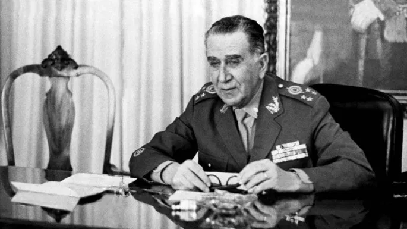

O milagre econômico foi um acontecimento da ditadura, onde a economia brasileira cresceu muito rápido, isto aconteceu entre 1968 e 1973. Mesmo parecendo algo bom, não foi bem assim. O milagre econômico só aconteceu pois os militares fizeram empréstimos gigantescos com o exterior, os quais resultaram na explosão dessa dívida nos anos seguintes.
Durante este período, o governo investiu bilhões em infraestrutura, para a
construção de várias obras,
por exemplo: Ponte Rio-Niterói e a Usina
de Itaipu.
Durante este período, o governo congelou os salários para manter a inflação “baixa”. Resultando no trabalhador ficando mais pobre, e o empresário mais rico.
Além de censurar a arte e os meios de comunicação, governo também escondia a pobreza e as torturas.
“Brasil, ame-o ou deixe-o” e “Ninguém segura este país”. Foi uma propaganda nacionalista para promover o Brasil externamente.
Multinacionais no Brasil tiveram vários privilégios, por exemplo: isenção de impostos, e facilidade de entrada no país. Pois o governo queria modernizar o país a qualquer custo.
